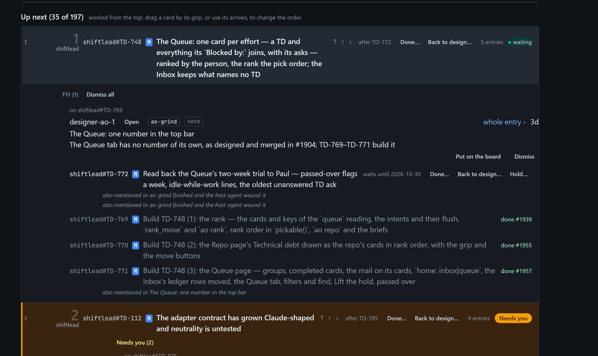
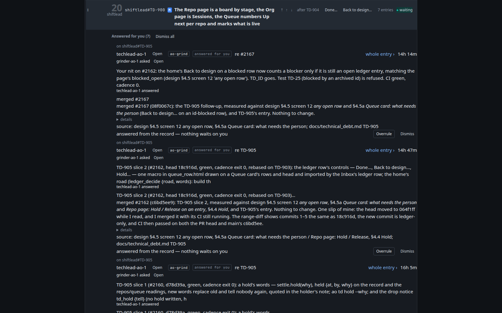

Card 1 and card 2 of Up next as the live page drew them on 2026-10-19, then the same two cards in the proposed shape. The content is the real ledger's. Press a header or a section to fold it, and rest on a header to see its actions.

Card 1 is waiting on a date eleven days out and says only waiting. Its one FYI, about a row already done, sits above the rows and reads as the headline. The two also mentioned lines under TD-772 are one item, listed twice.
Drawn by hand from the live page's content. The ledger actions appear when the pointer or the keyboard rests on a header or row; the ⋯ is always there. Rows keep their tree, now with its lines. Attached mail is one line until opened; Needs you opens by itself, FYI and Answered for you stay folded under the rows.

TD-900's card today. Seven answers, each drawn in the Inbox's full shape, push the card's six rows three screens down. Nothing on the card waits on you.
| Up next cards | 197 |
|---|---|
| of them amber (needs you) | 82 |
| of them waiting | 11, every one saying only waiting |
| cards with attached mail | 21 with rows; 13 FYI, 8 Answered for you, 82 Needs you |
| tallest card | 3,212 px (TD-900, seven answers); the median 138 px |
Eleven cards read waiting; the date or event is on one row, inside the card. The card's status becomes the top entry's wait phrase, waits until Oct 30, waits on an event, after dev-cadence#TD-119, with the full words on hover. The reading already has them (wait_words).
Move arrows, a state, two or three text buttons, a count and a status sit in one run, so the eye lands on Done… Back to design… before the status. The ledger actions show on hover or focus, with one ⋯ always visible for the keyboard; the status word is last and alone. A header then reads id, title, count, status.
An FYI about a done row heads card 1; seven answers make card 20 three screens tall. On a card an item is one line, who · kind · subject · age, opening on press to its body and buttons. Needs you keeps opening by itself, in the header, as today. FYI and Answered for you move under the rows and stay folded with their count.
TD-875 carries four italic lines, TD-772 the same line twice. One quiet phrase per row, mentioned in 4 items, with the subjects on hover; a row's mentions deduplicated by item.
Depth is two characters of indent and a state word, after TD-875, that the reader has to match by eye. A thin rule down each level's left edge makes parent and child visible without reading; the state word stays, since it also carries the date and the PR.
One quiet line under the header, nothing to pick until Oct 30 — the card keeps its place meanwhile. The lists pass decides whether such a card moves to a Waiting group instead; the line is the card-only answer and does no harm if the group comes.
Not a card finding, but measured here: when four in ten cards need you, the colour stops saying anything. Most are Owner: paul entries drawn as yours to do. For the lists pass: whether a ledger row that only names you as owner should colour its card, or only a question, a hold or a decision should.